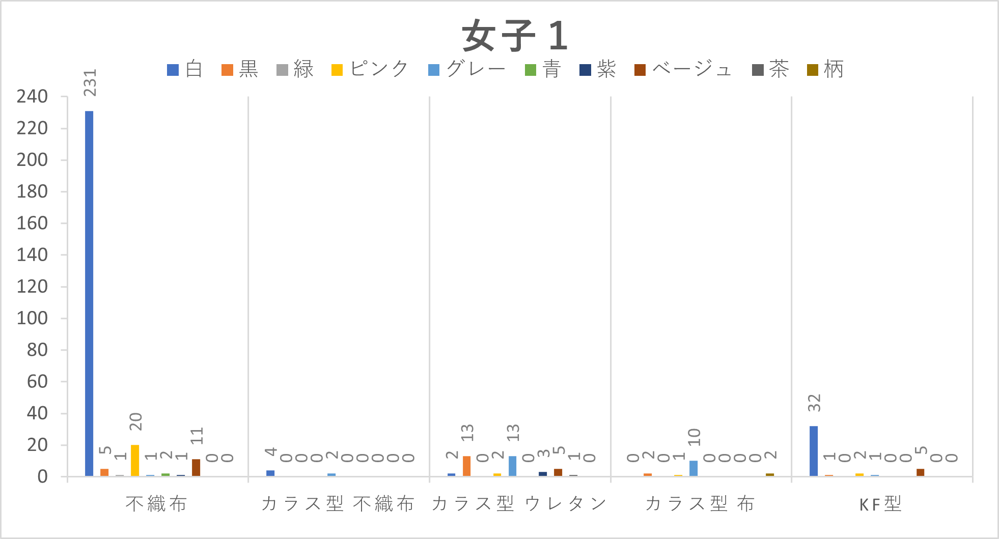
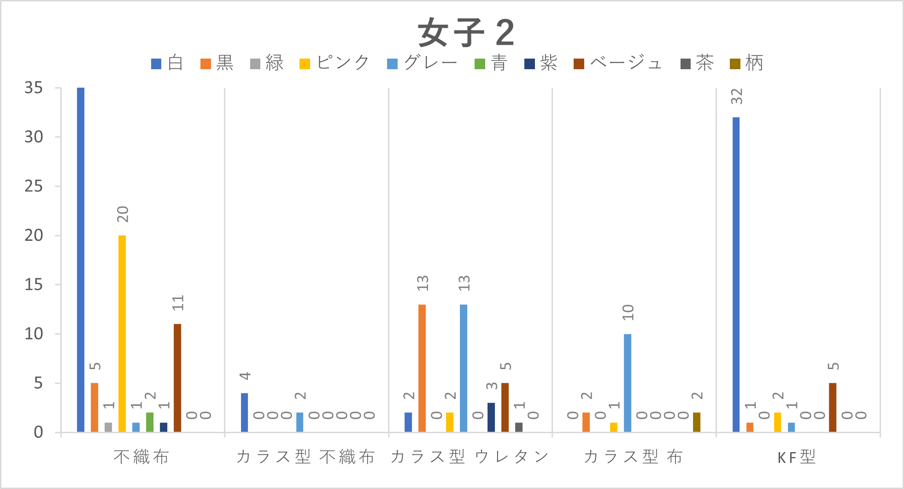
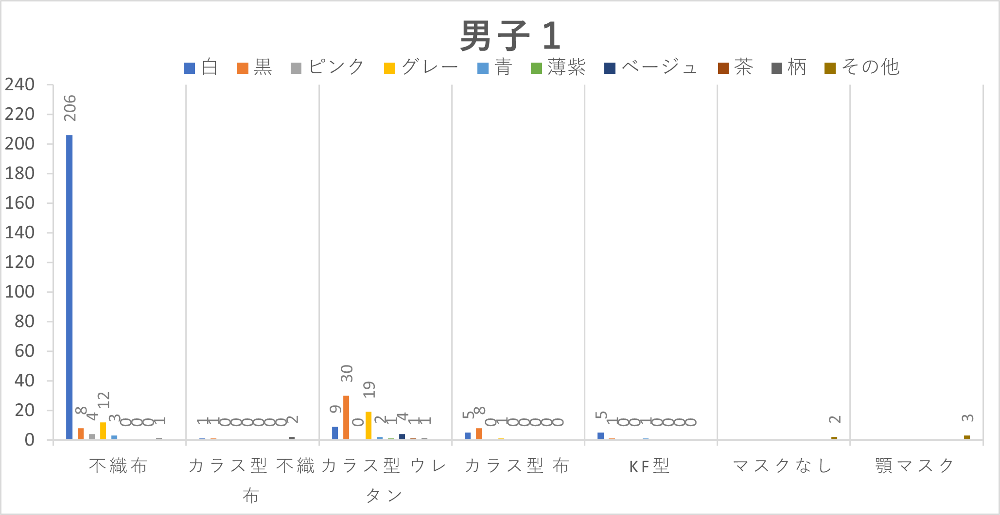
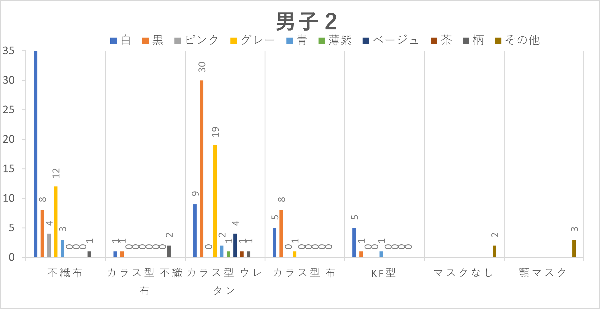

第4回 フィールドワーク結果
調査内容
対象
神奈川大学みなとみらいキャンパス 1階正面玄関を通過した学生
観察場所
神奈川大学 みなとみらいキャンパス 正面玄関
観察時間
2021年10月19日 14:20～15:25
焦点を当てるもの
マスク
横方向に多くの襞がある不織布でできているタイプ、縦に継ぎ目のあるカラス型と韓国で流行っているKF型の3タイプの形に分け、男女別に観察した。
さらに、素材と色にも注目した。
フィールドワーク準備
調査結果
女子：373人
「女子2」のグラフは「女子1」のグラフの数字の少ないところを見やすくしたものである。
 
圧倒的に白の不織布マスクの数が多くみられた。ただ、色のついたマスクをする人も比較的多く見られた。
男子：331人
同じく、「男子2」のグラフは「男子1」を見やすくしたものである。
 
女子と同じく、白の不織布マスクが多数であった。次に多かったのは黒のカラス型ウレタンであった。また、少数ではあるがマスクをつけていない人や、顎にマスクをかけている人もいた。
感想
今回調査を行ってみて、マスクは白い不織布マスクがほとんどで、少し黒いマスクがいると思っていたが、意外にも色々な色があり、形も不織布タイプだけではなく驚きがあった。また、男女でも傾向が少し異なっていて、興味深かった。男子は比較的落ち着いた色や黒が多かったが、女子は色のあるマスクが様々であった。マスクはただの予防するものではなく、ファッションの一部になってきているのではないかと感じた。
デザイン演習Ⅰ・Ⅱトップページ